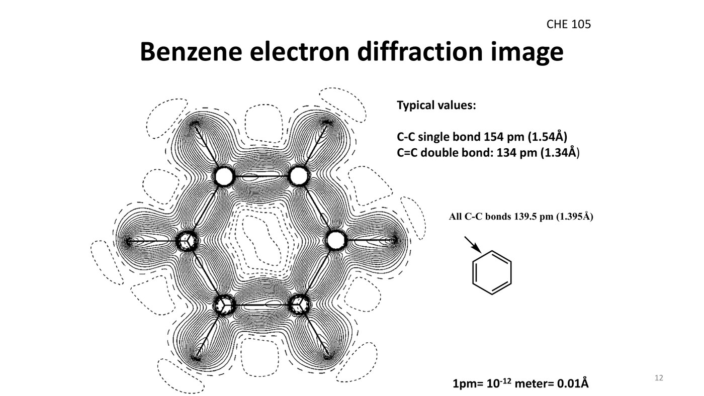
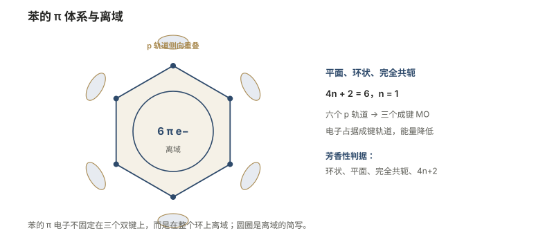
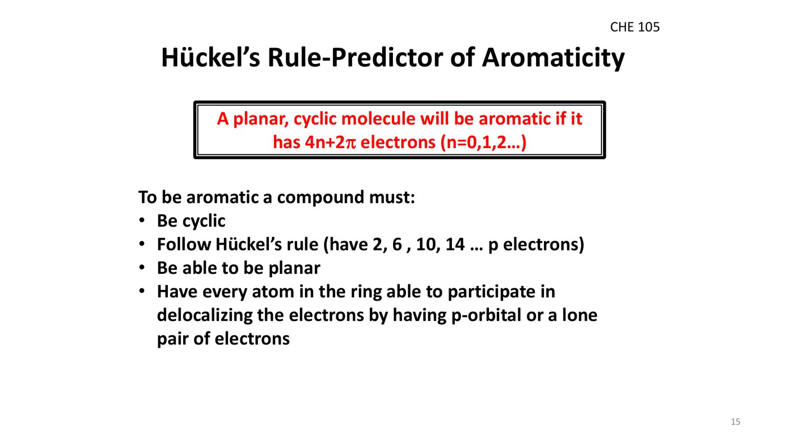

CHE105 · 第 7 章
离域与共轭：芳香性
Delocalization & Conjugation
虚线下划线为术语；悬停查看中文、英文与释义，完整词典见“术语”。
本章目录
本讲把“交替的单双键”讲成两件事：描述键的序列叫共轭，描述电子分布叫离域；再用分子轨道与 Hückel 规则判断芳香性，最后用共轭长度解释颜色。
本章要点
- 双键的三种排列：孤立、累积（cumulated）、共轭（conjugated）；只有共轭能让 p 轨道连续重叠。
- 共轭描述“键的序列”，离域描述“电子占据覆盖整个体系的分子轨道”，两者不能互换。
- 苯是 Kekulé 结构的杂化体（hybrid），用双头离域箭头表示，不能用平衡箭头。
- 苯的三个双键不发生加成反应；氢化热比较给出约 36 kcal/mol 的共振稳定能。
- n 个原子轨道组合出 n 个分子轨道：偶数个平分键与反键，奇数个多出一个非键轨道。
- Hückel 规则：环状、可平面、每个环原子都有 p 轨道或孤对、π 电子数为 4n+2。
- 二元取代苯用邻（ortho）/间（meta）/对（para）描述相对位置，三者分子式相同而沸点可区分。
- 共轭越长，基态到激发态所需能量越低，吸收波长越长，颜色越深。
7.1 双键的三种排列：孤立、累积与共轭
讲义先用三张结构图把双键的排列分成三类。第一类是孤立双键isolated double bonds：两个双键之间隔着至少一个 sp3 碳，p 轨道彼此不重叠，两个 π 键各管各的。第二类是累积双键cumulated double bonds：两个双键共用同一个碳，1,2-丁二烯（1,2-butadiene，即丙二烯型 allene）就是例子，中间的碳是 sp 杂化，两个 π 体系互相垂直，也不形成连续重叠。
第三类是共轭双键conjugated double bonds：单键与双键交替出现（alternating single and double bonds），每个碳都贡献一个 p 轨道，这些 p 轨道并排连成一个贯穿整个体系的 π 系统。1,3-丁二烯（1,3-butadiene）是典型：四个碳都是 sp2，四个 p 轨道连续重叠。讲义的典型键长是单键 1.54 Å、双键 1.34 Å，用来对照后面苯环上所有 C–C 键等长的事实。
这里要把两个词分开：共轭conjugation指的是“交替单双键所连成的一串 p 轨道”，说的是键；离域delocalization指的是“电子分布在整个共轭体系所对应的分子轨道上”，说的是电子。讲义的原话是：我们用共轭描述键，用离域描述电子。
L7 p.4–5
7.2 共轭在自然界：色素、香料与视觉
讲义用一组天然产物说明共轭不是抽象概念。番茄、玫瑰果与浆果中的红色色素是番茄红素lycopene；胡萝卜等蔬菜中的红色色素是β-胡萝卜素β-carotene。两者的共同点是长链上连续交替的单双键——一条很长的共轭体系。肉桂中的肉桂醛cinnamaldehyde则是苯环与 C=O 通过一个双键连成的共轭体系，是“芳香环 + 共轭侧链”的最小模型。
视觉的例子更关键：视黄醛retinal的光致异构化photoisomerization是视觉的第一步。视黄醛的长链共轭体系在吸收一个光子后，由全反式（trans, E）变为顺式（cis, Z），双键两侧基团的相对位置改变，分子形状随之改变。讲义在这里顺带复习了几何异构：顺反异构属于几何异构geometrical isomers，同一种连接方式、不同的空间排布。
这些例子共同支撑本讲的一条主线：分子形状与结构决定反应性（molecular shape and structure determine reactivity）。共轭体系吸收什么颜色的光、能否发生某类反应，都由 p 轨道的连接方式决定，而不是由“有几个双键”单独决定。
L7 p.2–3
7.3 苯的结构：一个杂化体，不是两种分子的平衡
苯的历史线索在补充材料里：1825 年 Faraday 从照明气中分离出苯并注意到它有愉快的气味；1865 年 Kekulé 提出苯的环状结构；1931 年 Hückel 用 4n+2 规则给出量子力学基础。
结构上的核心事实是：苯有三个双键，却不发生加成反应。如果把苯写成环己三烯（cyclohexatriene）并让它加 3 分子 H2，释放 85.8 kcal/mol；而真实的苯加 3 分子 H2 只释放 49.8 kcal/mol。差值约 36 kcal/mol 就是共振能resonance energy，也就是苯比“假想的环己三烯”额外稳定出来的能量。
因此苯不能写成两个 Kekulé 结构之间的平衡。讲义用了独角兽的比喻：独角兽不是“有时是马、有时是犀牛”，而是两者的杂化体（hybrid）。苯也是这样——它是两个 Kekulé 结构的杂化体hybrid，真实分子只有一个，电子离域在六个 p 轨道上。表示这种关系要用双头的离域箭头delocalization arrow，不能用平衡箭头（equilibrium arrow）。
实验证据是电子衍射给出的键长：普通 C–C 单键 154 pm，C=C 双键 134 pm，而苯环上六个 C–C 键全部是 139.5 pm，正好落在两者之间且完全等长。这只能用“每个 C–C 键都带约一半双键性质”来解释。


绘图提示词
Clean vector diagram of benzene delocalization: on the left two Kekule structures joined by a double-headed delocalization arrow labeled hybrid, on the right the hexagonal ring with six parallel p orbitals above and below the plane merging into a continuous torus of pi electron density, with all six C-C bonds labeled 139.5 pm. Flat 2D, thin 1.5 px strokes, muted slate blue and warm grey palette, white background, English labels, no cartoon, no gradient, no shadow.
L7 p.7–12；L7 补充 p.2
7.4 苯的反应性：取代而不是加成
讲义的对照实验很直接：烯烃与 Br2 反应得到加成产物（邻二溴化物）；苯在 Fe 催化下与 Br2 反应，得到的是溴苯与 HBr，即取代产物，反应混合物中检测不到加成产物。原因就是 s3 的结论：加成会破坏六个 p 轨道的连续重叠，把 36 kcal/mol 的共振稳定能白白丢掉；取代则保留芳香环。
这里还有一条画机理的规矩（p.13）：中间画着圆圈的苯环表示法不能用于机理。画机理必须用 Kekulé 结构，因为箭头要指向具体的 π 键或具体的 p 轨道，圆圈里没有可以指的对象。讲义同时说明：两种 Kekulé 画法给出的最终结果相同，只是其中一种要多画几步箭头。
L7 p.13–14
7.5 分子轨道的基本记账规则
要把“离域为什么稳定”说清楚，需要一套组合原子轨道（AO）得到分子轨道（MO）的规则，讲义给了四条：
- MO 的数目等于参与组合的 AO 数目。
- 偶数个 MO 平均分成键轨道（能量较低）与反键轨道（能量较高）。
- 奇数个 MO 同样分成键与反键，中间多出一个非键轨道（non-bonding MO）。
- 节点（node）总是对称排列，并且会抵消它所穿过的那个原子的贡献。
以乙烯为例：两个 p 轨道组合出两个 MO，成键 MO 无节点、反键 MO 中间一个节点，两个 π 电子填在成键轨道里。1,3-丁二烯有四个 p 轨道，于是有四个 MO，两个成键、两个反键，四个 π 电子正好填满两个成键轨道。共轭带来的变化是：随共轭加长，最高占据轨道（HOMO）与最低空轨道（LUMO）之间的能隙变小。这个能隙正是 s9 讨论颜色时要用的量。
Clean vector orbital energy diagram comparing ethene and 1,3-butadiene side by side: ethene with two p orbitals giving one bonding and one antibonding pi MO with two electrons in the lower level; 1,3-butadiene with four p orbitals giving four MOs, two bonding filled with four electrons and two empty antibonding, nodes drawn as dashed lines across each orbital lobe, and the smaller HOMO-LUMO gap of butadiene marked with a bracket. Flat 2D, thin 1.5 px strokes, muted slate blue and warm grey palette, white background, English labels, no cartoon, no gradient, no shadow.
L7 p.17–22
7.6 三个 p 轨道：烯丙基体系与三原子离域
三个 p 轨道组合出三个 MO：一个全程无节点的成键轨道、一个在中间碳上有一个节点的非键轨道、一个有两个节点的反键轨道。这个体系的两个代表是烯丙基阴离子与烯丙基阳离子。
烯丙基阴离子allyl anion有 4 个 π 电子，成键轨道与非键轨道都被填满。关键结论是：非键轨道在中间碳上恰好有一个节点，节点会抵消该原子的贡献，所以这个轨道被占据时中间碳上没有电子密度；负电荷平均落在两个端碳上。
烯丙基阳离子allyl cation只有 2 个 π 电子，只填成键轨道，正电荷同样由两个端碳分担。两个体系都必须用离域箭头画，不能画成两个共振式之间的平衡。
同样的“三个原子共享电子”的模式出现在三组官能团里：
- 羧酸根carboxylate anion：两个 C–O 键等长，负电荷由两个氧分担，两个氧在化学上等价。
- 酰胺amide：氮的孤对离域进 C=O，使 C–N 键带部分双键性质；由此得到两个后果——氮的孤对不再“可用”（所以酰胺碱性很弱，见第 8 章），以及室温下 C–N 键的旋转受到限制。
- 硝基nitro group：负电荷离域到两个氧上，这也是硝基能稳定负电荷的结构基础（第 8 章讲硝基酚的酸性时要用）。

L7 p.23–32
7.7 Hückel 规则：芳香性的四个条件
Hückel 规则Hückel's rule的表述是：一个平面、环状的分子，如果拥有 4n+2 个 π 电子（n = 0, 1, 2 …），就是芳香性的。展开成可操作的检查表是四条，缺一不可：
- 环状（cyclic）：原子必须闭合成环。
- 满足 4n+2：π 电子数为 2、6、10、14 ……
- 能够共平面（able to be planar）：环上所有原子能处在同一平面内。
- 每个环原子都能参与离域：每个原子都要有一个 p 轨道，或一对可以放进 p 轨道的孤对电子。
数电子时只数“能参与共轭”的那部分：每个双键贡献 2 个 π 电子；孤对只有在 p 轨道里、能与环共轭时才计入。据此核对几个标准例子：苯 3 个双键共 6 个 π 电子，n = 1；环戊二烯基阴离子 2 个双键加 1 对孤对，共 6 个，n = 1；吡咯的氮把孤对放进 p 轨道参与共轭，共 6 个；呋喃由氧的一对孤对参与，也是 6 个；吡啶的 6 个 π 电子来自环内三个双键，氮上那对孤对不参与环的 π 体系，不计入。咪唑（benzimidazole）与萘、蒽同样按整环计数。
多环体系有一条容易错的规则：4n+2 要对整个共轭 π 体系计数，不能一个环一个环地算。萘总共 10 个 π 电子（n = 2），蒽总共 14 个（n = 3），都不是“两个苯环各 6 个”。

L7 p.15–16；L7 补充 p.4–6
7.8 平面性是一条独立的门槛：轮烯（annulene）
轮烯annulene是“共轭的单环烃”，用 [n] 标出环上碳数。讲义用三个轮烯说明一件事：满足 4n+2 只是必要条件，能不能平面是另一条门槛。
[18]-annulene 满足 4n+2，并且能够采取接近平面的构象，因此是芳香性的。它之所以能平面化，是因为环上有反-反-顺（trans-trans-cis）的双键组合，使所有键角都能接近 120°，张力被分散掉。[10]-annulene 的全顺式（all-cis）构象则无法平面化：五个顺式双键把环拉成非平面形状，一旦压平，键角与氢原子之间的排斥过大，所以它不具芳香性。[20]-annulene 同理，平面构象下张力过大，也不是芳香性的。
这条判据在杂环上同样适用：吡啶、吡咯、呋喃都是平面的五元或六元环，才有 6 个 π 电子的连续体系；一旦环被取代基扭出平面，共轭被打断，芳香性也随之消失。
L7 p.16
7.9 苯的衍生物：邻、间、对位
苯环上有一个取代基时，命名以苯为母体，例如甲基苯即甲苯（toluene）。有两个相同取代基时，用邻位ortho（1,2-）、间位meta（1,3-）、对位para（1,4-）描述相对位置，也可以直接用数字编号。讲义给出的三个二甲苯异构体是：1,2-二甲苯（o-xylene）、1,3-二甲苯（m-xylene）、1,4-二甲苯（p-xylene）。
位置异构带来可测的物理性质差异。讲义的沸点数据是：甲苯 110.6 °C；邻二甲苯 144.4 °C；间二甲苯 139.1 °C；对二甲苯 138.3 °C。三个二甲苯的沸点彼此接近但可以区分，说明“连接方式相同、取代基相对位置不同”也是一类真实的异构——它们不是结构异构体（连接方式相同），而是位置异构，属于立体异构之外的另一层分类。分离与鉴定这些异构体，靠的正是这类物理性质的微小差别。
把这一节与前面的芳香性判据并起来：苯环上的取代不改变环的芳香性（环仍是 6 个 π 电子、平面、环状），改变的是分子形状、偶极与分子间作用，于是沸点、熔点、溶解度出现差异。这也是“结构决定性质”在芳香化学里的直接体现。
L7 补充 p.7–8
7.10 颜色从哪里来：共轭长度与 HOMO–LUMO 能隙
讲义最后把共轭与颜色连起来。物质呈现的颜色来自它没有吸收的那部分光：白光照射物体，某些波长的能量被电子跃迁吸收，透过（或反射）剩下的部分进入眼睛，我们就看到那个颜色。
吸收的本质是电子从基态跃迁到激发态，所需能量等于 HOMO 与 LUMO 的能隙。共轭程度越高，参与组合的 p 轨道越多，能隙越小，跃迁所需的能量越低，对应吸收的光波长越长。苯的共轭只有六个 p 轨道，能隙大，吸收落在紫外区，所以苯无色；番茄红素、β-胡萝卜素这类长共轭链的能隙已落进可见区，吸收蓝绿光，透过的光呈红橙色，于是我们看到“红色色素”。
把这条逻辑倒过来用，就是本讲的总结：结构（p 轨道的连接范围）决定分子轨道（能隙大小），分子轨道决定光吸收，光吸收决定颜色；同一套结构—轨道—性质的推理，也解释了苯为什么取代而不加成。
| 体系 | 共轭范围 | HOMO–LUMO 能隙 | 表现 |
|---|---|---|---|
| 乙烯 | 2 个 p 轨道 | 最大 | 吸收在远紫外，无色 |
| 1,3-丁二烯 | 4 个 p 轨道 | 较乙烯小 | 吸收仍在紫外区 |
| 苯 | 6 个 p 轨道（环状） | 大 | 紫外吸收，无色 |
| 番茄红素 / β-胡萝卜素 | 长链多烯 | 小，落入可见区 | 吸收蓝绿光，呈红橙色 |
L7 p.33–35